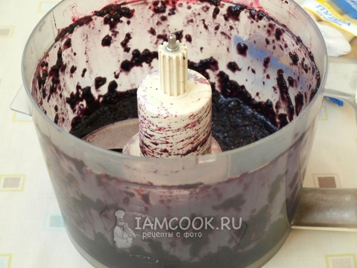
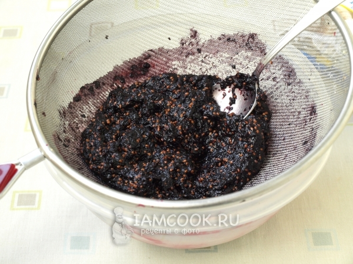
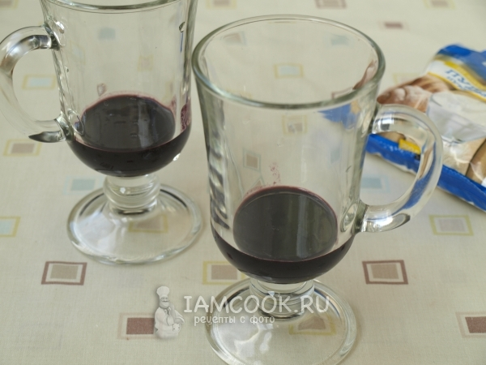
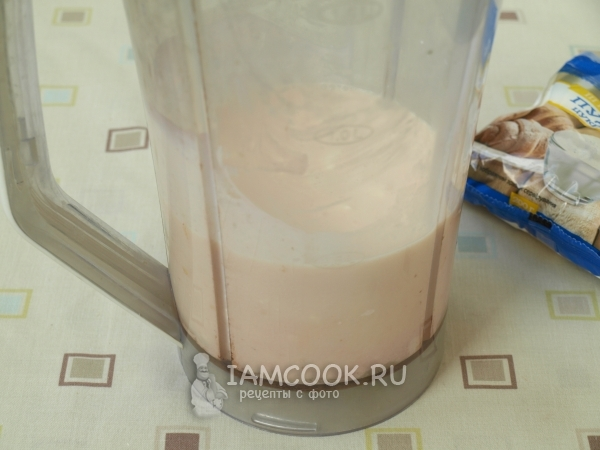
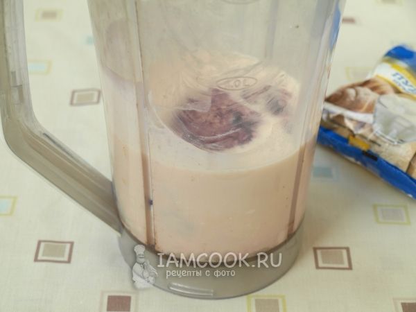
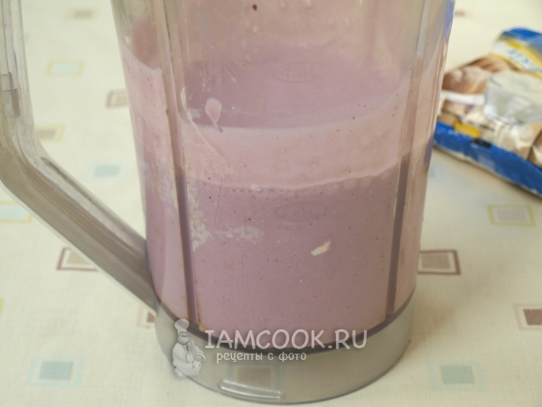
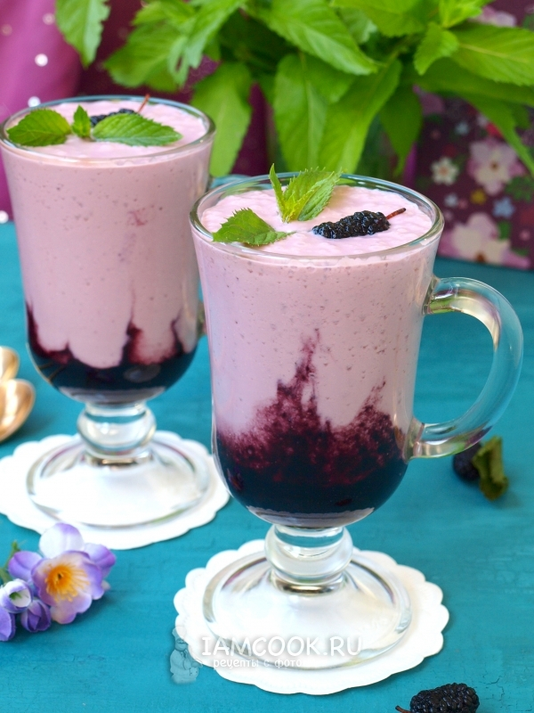

Творожный коктейль на ряжанке с шелкопицей
- Ингредиенты:
- Шелковица - 250 г
- Ряженка - 200 мл
- Молоко - 120 мл
- Сахарная пудра - 3 ст.л.
- Творог - 100 г
ПРОЦЕСС ПРИГОТОВЛЕНИЯ
Предлагаю вам приготовить замечательный творожный коктейль на ряженке с шелковицей.
У нас стоит такая духота, что кроме холодных десертов и напитков совсем ничего не
хочется, но всё же большой плюс в том, что летом поспевает множество различных ягод
и фруктов и мы может насытить свой организм необходимыми витаминами.
Для приготовления коктейля следует подготовить необходимые продукты. Молочные
продукты обязательно должны быть холодными.Творог я решила добавить уже в процессе,
чтобы сделать коктейль более густым, можно вместо него увеличить количество ряженки или молока.
Ягоды шелковицы выложить в чашу комбайна и прокрутить

Сложить шелковицу в сито и протереть. Затем добавить ложку сахарной пудры и перемешать.

Взять стаканы и налить в них 2-3 ст.л. шелковичного пюре.

В блендер налить ряженку, молоко, всыпать остальную сахарную пудру.

Добавить творог и остаток шелковичного пюре.

Взбить, нажав на кнопочку до однородности.

Молочную смесь, аккуратно вылить
сверху шелковичного пюре. Сразу подать вкуснейший коктейль на десерт.
